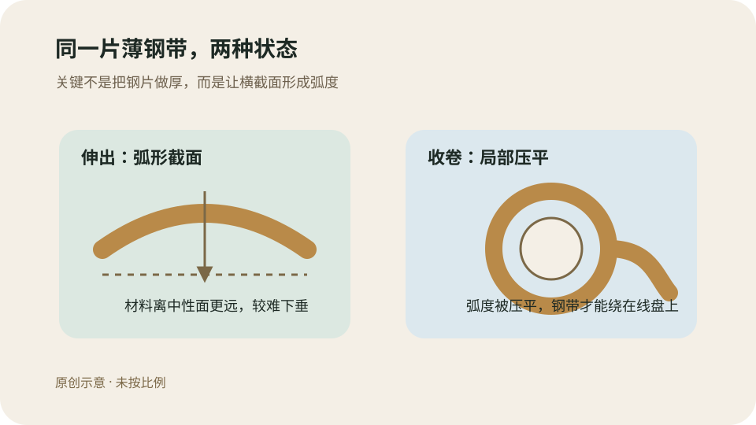
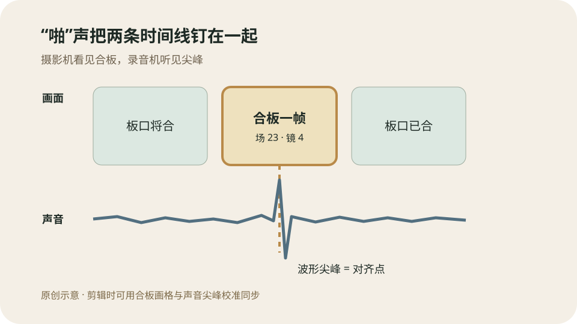
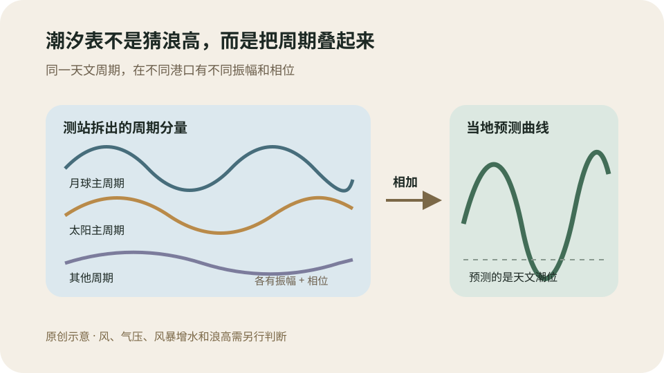

今日热点 01 · 工作 / 移民政策
美国拟对受名额限制的H-1B申请加收103,265美元，目前仍是提案
美国国土安全部8月25日公布拟议规则，计划对所有受年度名额限制的H-1B申请另收103,265美元，硕士及以上学位豁免名额也包括在内。费用由雇主在递交申请时支付；规则还要经过30天公众意见期，并未生效。
提案写了什么
这是一笔另加费用，不会替代现有申请费
拟议文本把103,265美元列为独立费用，适用于受年度名额限制的H-1B申请，包括通常所说的6.5万个普通名额和2万个美国高等学位名额。现有表格费、反欺诈费等仍需另付。
付款主体是递交申请的雇主，不是受聘者本人。规则没有把所有H-1B都装进同一篮子：依法不受年度名额限制的部分高校、研究机构及关联非营利组织申请，不在这项新收费范围内。
数字怎么得来
政府把约87.77亿美元成本除以预计8.5万件申请
国土安全部把移民裁决、调查、边境检查、领事处理、劳工执法和信息系统等跨部门成本合计为8,777,488,035美元，再除以预计缴费量85,000，得到103,264.57美元，按5美元取整。
这也意味着收费并非按处理一份H-1B表格的边际成本计算，而是让一类申请分担更广的合法移民体系成本。公众意见期里，成本能否这样归集、申请量假设是否可靠，都会成为争论重点。
别和旧案混在一起
去年10万美元付款与这次提案采用不同法律路径
2025年的总统公告曾要求部分H-1B申请另付10万美元。联邦地区法院今年6月撤销了执行指引，政府已上诉，案件仍在审理。那项付款以入境限制权为依据，且原定今年9月到期。
本次拟议规则改以移民服务收费权限为基础。文件甚至写明，若旧付款后来恢复且两项同时适用，申请人可能需要两笔都付。法院如何处理旧案，并不能自动决定新规则是否合法。
谁最先感到变化
若最终实施，用人单位会先重算招聘和岗位地点
对于薪酬高、人才稀缺的岗位，大企业可能仍愿意承担；预算较小的公司、大学初创团队和早期职业岗位更可能缩减名额申请，或把岗位转向不需要这类签证的地区。
现在还不该据此取消求职或搬迁计划。真正要盯的是正式规则、施行日期、豁免条款与诉讼。处在招聘流程中的人，应让雇主或移民律师按具体申请类别核对，而不是把新闻标题当成已到期账单。
103,265美元是美国政府提出的H-1B年度名额申请附加费，由雇主递交时支付；它尚未生效，也不覆盖全部H-1B类别。
查看事实与延伸来源
美国《联邦公报》拟议规则：适用范围、金额、成本算法与意见期
美国公民及移民服务局公告：提案概要与预计年收入
路透社：法院争议、既有费用与雇主影响
今日热点 02 · 文化 / 音乐
多莉·帕顿去世，享年80岁；她留下的不只是台前形象
美国乡村音乐创作人、歌手和公益项目发起人多莉·帕顿8月25日在纳什维尔去世，享年80岁。家人和经纪人已确认消息，死因没有公布。她写下数百首歌曲，也把对作品权利的控制和儿童阅读计划做成了长期事业。
目前能确认什么
家人与经纪人确认死讯，死因仍未公开
帕顿的家人在声明中说，她在田纳西州纳什维尔平静离世。经纪人向美联社确认消息，但没有说明死因。社交平台和二手报道中的疾病猜测，目前都不应补进事实空白。
她1946年出生于田纳西州大烟山地区一个有12个孩子的家庭，1960年代进入纳什维尔音乐行业，后来横跨唱片、影视、主题乐园与公益事业。
先把她当创作者
《Jolene》和《I Will Always Love You》先是写出来的，才是唱红的
帕顿最持久的资产不是某一种舞台造型，而是歌曲目录。她写下数百首作品，其中《Jolene》《Coat of Many Colors》和《I Will Always Love You》被不同世代的歌手反复翻唱。
惠特妮·休斯顿1992年的版本让《I Will Always Love You》进入全球流行史，但词曲版权仍属于帕顿。作者与表演者可以是两套权利，这首歌正好把区别摆在公众面前。
一次拒绝的价值
她没有用一半出版权换猫王的录音
猫王埃尔维斯·普雷斯利曾有意录制《I Will Always Love You》，条件是取得一半出版权。帕顿拒绝了。她后来多次说，那是艰难决定，却保住了歌曲未来的许可收入和处置权。
这不是浪漫化的“坚持自我”，而是很具体的商业判断：短期曝光能让作品更快出圈，出版权则会在每次录音、播放和授权中长期分配收益。
舞台外的遗产
想象图书馆把每月寄书坚持了三十多年
帕顿1995年在家乡创办“想象图书馆”，为从出生到5岁的儿童每月免费寄一本书，最初用于纪念不识字的父亲。项目随后扩展到美国、英国、加拿大、澳大利亚和爱尔兰。
截至2026年6月底，项目累计寄出超过2.7亿册书。它的规模来自长期合作：基金会负责选书与基础体系，地方伙伴筹资并登记儿童。明星影响力在这里变成了可重复运行的公共服务。
多莉·帕顿的公共遗产由三条线组成：写歌与演唱、对作品权利的长期控制，以及持续三十多年的儿童赠书网络；死因目前没有公布。
查看事实与延伸来源
美联社：死讯确认、生平、代表作与出版权决定
路透社：家属声明与行业影响
多莉·帕顿想象图书馆：项目起源、运行方式与累计寄书量
美国国会图书馆版权博客：作品权利与惠特妮·休斯顿版本
今日热点 03 · 科技 / 科研投入
美国国家科学基金会向8个量子研究院投入逾2.9亿美元，三所为新设
美国国家科学基金会8月25日宣布，未来五年向8个量子研究院投入合计逾2.9亿美元，单所约2,800万至3,700万美元。其中3所新设，5所续资。项目瞄准制造、纠错、联网、模拟和传感等基础瓶颈，不等于量子计算机即将大规模商用。
钱投到哪里
八个研究院不是八台机器，而是跨校研究网络
8个研究院覆盖19个州、36所高校，还连接能源部国家实验室、国家标准与技术研究院及30多家公司。每个研究院把多所学校、实验室和企业围绕一类难题编成长期团队。
其中3所新设，分别聚焦容错系统、可制造且更稳健的超导量子信息系统、实用量子纠错；另外5所从2020或2021年起已获支持，这次进入下一阶段。
为什么仍在补基础
量子比特会出错，能做出来也不等于能稳定扩展
量子态容易受环境噪声和器件缺陷影响。增加量子比特数量时，控制线路、材料一致性、误差校正和模块连接会一起变难。实验室里完成一次演示，与制造可重复、可维护的系统，中间还有很长的工程链。
例如普林斯顿牵头的新研究院将获得2,790万美元，研究超导量子处理器关键部件的材料与半导体制造方法。目标是重做底层工艺，而不是宣布一款消费产品。
不只有计算
量子传感和原子钟可能比通用计算更早进入具体场景
续资项目还包括量子生物传感、精密测量、混合架构与量子模拟。科罗拉多大学博尔德分校牵头的研究院获得3,750万美元，继续研究原子钟、稳定激光和生物医学传感。
这些路线利用叠加、纠缠或量子跃迁来测量极弱信号，不必等待一台万能量子电脑成熟。它们仍需证明实验室灵敏度能在成本、尺寸和环境噪声约束下保留下来。
怎样读这类新闻
这是五年研究组合，不是五年交付承诺
2.9亿美元分给8个研究院、数十家机构和五年周期，既买设备和研究时间，也用于培养数百名学生与早期研究者。它衡量的是国家科研布局，不是单一公司的产品估值。
未来可观察的进展包括更低的逻辑错误率、更一致的器件制造、不同量子模块稳定互联，以及传感器在真实环境中的重复结果。只看“量子”与总金额，很容易把研究投入误读成技术兑现。
逾2.9亿美元将分布到8个跨机构量子研究院，三所新设、五所续资；资金瞄准制造、纠错、网络、模拟和传感的基础瓶颈，不是产品交付公告。
查看事实与延伸来源
美国国家科学基金会：总额、八个研究院、合作范围与研究方向
普林斯顿大学：2,790万美元新研究院与量子器件制造难题
科罗拉多大学博尔德分校报道：3,750万美元续资与精密传感方向
涉猎 01 · 日用品 / 材料力学
卷尺薄薄一片，为什么拉出来能在空中伸直
卷尺钢带看上去薄，拉出后却不是平片：它的横截面有一道浅弧。弧度把材料分布到离中性面更远的位置，提高沿长度方向的抗弯能力；卷回尺壳时，钢带局部压平，才能绕在线盘上。

同一片薄钢带，伸出时靠横向弧度抵抗下垂，收卷时局部压平。原创示意，未按比例。
别只看厚度
横向弧度把薄片变成一条浅壳
一张平纸很容易沿长度折下去，先把它横向弯成浅槽，再托住两端，就会明显更挺。卷尺使用相同思路：钢带中央呈凹凸弧形，两侧可带较平的边缘。
截面弯曲会把一部分材料移离受弯时的中性面，截面的惯性矩随之增加。材料和厚度没变，几何形状却让它更不愿沿另一方向弯曲。
为什么仍会塌
伸得越长，自重力矩越大，最后会突然失稳
钢带伸出越长，悬空部分越重，根部承担的弯矩也越大。到达某个距离后，局部横向弧度被压扁，抗弯能力骤降，卷尺便在那一点折下。
厂商所说的“挺直距离”因此不是无限刚性，而是特定宽度、弧度、厚度和材料共同给出的失稳门槛。托住前端、改变角度或让刻度面朝向另一侧，结果也会不同。
怎样卷回小盒
尺壳入口迫使弧面变平，回卷弹簧储放能量
弧形钢带无法直接绕成紧密圆盘。进入尺壳时，它被导向结构压平，再绕在线盘上；相关卷尺专利也明确描述钢带收卷时处于扁平状态。
线盘内的回卷弹簧在拉出时上紧，松手后释放能量带动钢带回收。锁定按钮只是暂时阻止线盘转动，不是让伸出部分保持挺直的来源。
卷尺的挺直主要来自钢带横截面的浅弧，而不是单纯靠厚度；伸得太长时弧度局部压平而失稳，收卷时则主动压平绕盘。
查看事实与延伸来源
美国卷尺钢带专利：凹凸截面、抗弯与收卷时压平
美国卷尺挺直结构专利：曲率轮廓与下垂控制
STANLEY官方说明：卷尺“挺直距离”的产品定义
涉猎 02 · 电影 / 制作流程
电影场记板为什么要“啪”一声：给画面和声音造一个共同瞬间
电影现场常把画面和高质量声音分别记录。场记板合拢时，摄影机拍到两根板条接触的那一帧，录音机同时留下短促而清楚的声音尖峰；剪辑时把两者对齐，就能让口型与声音回到同一条时间线。

合板制造一个同时可见、可听的标记；板面上的场次与镜次再告诉后期这是哪一条素材。原创示意。
声音为什么好用
短促尖峰比一句口令更容易定位到精确时刻
人说“开始”会持续好几个音节，口型也没有唯一帧。场记板的接触动作接近瞬时事件：画面里能找到板条刚合上的帧，波形里也能看到突出的尖峰。
把尖峰与合板帧放在同一位置后，后续画面和整段录音便有了共同起点。前提是两台设备的速度稳定；若时钟长期漂移，还要靠时间码或尾部标记检查。
板面也在工作
场次、镜次和条次把分散文件重新配对
一次拍摄会产生大量外观相似的视频与音频文件。板面写下制作名、场次、镜次、条次、日期等信息，摄影机拍得到；工作人员口述同样信息，录音文件也能听到。
即使文件名丢失或自动元数据出错，后期仍可用这组人类可读的标识找回配对关系。没有同步声音的镜头会标明MOS，避免剪辑师苦找并不存在的录音。
有时间码还要不要打板
数字同步提高效率，实体标记保留独立复核通道
现代摄影机、录音机和电子场记板可以共享时间码，软件也能按波形自动配对。正常情况下，素材导入后不必逐条手动找“啪”声。
时间码仍可能因为设备未锁定、换电池、设置错误或帧率不一致而失效。场记板把同步点和镜头身份同时留在原始素材中，成本很低，所以常被保留为备份。
场记板合拢同时留下可见帧和声音尖峰，用来同步分别记录的画面与录音；板面、口述和时间码则共同解决素材身份与备份校验。
查看事实与延伸来源
美国电影艺术与科学学院技术资料：画面标记与声音标记的同步方法
Kodak场记指南：板面字段、场次、条次与MOS标记
Kodak电影术语表：声音与画面的同步定义
Routledge影视制作教材节选：双系统录音与场记板同步
涉猎 03 · 海洋 / 预测方法
潮汐表怎样提前知道海水会涨多高：先测当地，再叠加天文周期
月球和太阳的相对位置可以提前计算，但它们在各个港口造成多大水位变化，取决于海湾形状、水深和局部响应。潮汐机构先分析测站历史水位，求出多个周期各自的振幅与相位，再把它们相加成未来潮位曲线。

调和分析先从本地记录估计每个周期的振幅和相位，再叠加为天文潮位；天气造成的偏差要另算。原创示意。
先有周期
月球主周期每天约慢50分钟，太阳周期保持24小时
地球自转时，月球也沿同一方向绕地球运行，一个地点要比24小时多约50分钟才能再次对准月球。与此相关的主要半日潮分量，约每24小时50分钟出现两次峰值。
太阳造成的主要半日分量则与24小时自转对应。除此之外，还有月球轨道倾角、月地距离和季节等周期。每个分量都可写成一条有固定频率的余弦曲线。
再测当地响应
同一股天文作用，在不同海岸会被放大、延迟或改变形状
海湾长度、海底地形、摩擦和水体共振会改变潮汐。预测机构不能只查月球位置，还要用潮位计记录当地水位，反推出每个周期在该站的振幅和相位。
NOAA说明，至少30天记录可观察大部分月、日周期；要直接分辨常用的37个主要分量，需要约一年数据。记录越长，通常越能把长期变化和噪声分开。
最后把波叠起来
每个分量算到目标时刻，相加得到高潮、低潮与潮高
有了测站的调和常数，计算程序便能把每条余弦曲线推进到未来某时刻，再加上平均水位。所有分量之和形成复杂曲线，高点和低点就是潮汐表中的预报时刻与高度。
没有完整调和常数的附属站，可依据附近参考站的高潮、低潮时间和高度再做地方修正。因而潮汐表必须对应具体测站与统一的高程基准，不能把邻港数字直接搬来。
潮汐表不包天气
风、气压、河流和风暴增水会把实测水位推离预测线
调和预测主要回答可重复的天文潮位。强风把海水推向岸边、低气压抬高水面、暴雨增加河流来水时，实际水位可能明显高于或低于表格。浪高又是另一项指标。
航行或沿海活动不能只看“几点涨潮”。还应核对实时测站、海洋天气和风暴增水预报；潮汐表提供基线，现场风险来自基线与天气扰动的合成。
潮汐表先用本地测站求出多个天文周期的振幅和相位，再把余弦曲线相加；它预测的是天文潮位，风、气压和风暴增水需另看。
查看事实与延伸来源
NOAA潮汐与海流：37个调和分量、振幅相位与数据长度
NOAA潮汐预测帮助：调和站与附属站的计算差别
NOAA海洋教育：海岸地形、天气影响与潮汐预测历史
NASA技术综述：天文强迫、调和预测与风驱动水位
“夫得言不可以不察，数传而白为黑，黑为白。”
《吕氏春秋》编者《察传》（战国末期）
《察传》讨论消息在转述中怎样走样，随后用孔子误判乐正夔、子夏听错史志的故事说明：来源看似可靠，也可能在传递环节改变原意。它没有要求人对一切都怀疑，而是把核查放在相信之前。遇到耸动数字或完整得过分的故事，先找原始文本、确认说话者和语境，再决定是否转述。
核对原文与语境
“常规科学并不以发现事实或理论的新奇为目标；成功时，它也确实发现不了新奇。”
托马斯·库恩《科学革命的结构》（1962） · 本刊译
库恩所说的“常规科学”，是研究者在共同范式内解题、提高测量精度并扩展适用范围的工作。它看起来保守，却构成大部分科学实践；异常只有在反复出现、无法用既有工具消化时，才可能推动框架变化。句子的重点不是贬低日常研究，而是解释新奇为何常从预期之外冒出来。
核对原文与语境
“不存在单一议题的斗争，因为我们过的从来不是单一议题的人生。”
奥德丽·洛德《向六十年代学习》（1982） · 本刊译
洛德在演讲中回看美国黑人解放运动，批评把种族、性别、阶级与性取向拆成互不相干的政治议题。现实中的人同时处在多种关系里，一项政策也会沿不同身份产生叠加影响。这句话后来常被抽成口号，原文更具体：组织若只承认一种压迫，也会把本应同行的人排除在外。
核对原文与语境
“当我走到这些问题的尽头——这并不等于找到答案——写作过程也走到了尽头。”
韩江《诺贝尔文学奖演讲》（2024） · 本刊译
韩江谈自己写小说时，不是先拿到结论再用人物证明，而是从一组难以回答的问题出发，让叙事把问题推到边界。作品完成并不等于疑问被解决，只表示这一次写作能抵达的地方已经到了。它区分了两种结束：答案封闭讨论，抵达边界则保留复杂性，也允许读者继续追问。
核对原文与语境
“实验者的本领，是把实验做得清楚，让不需要的效应不去干扰问题的答案。”
沃尔夫冈·保罗《电磁阱中的粒子》（1989） · 本刊译
保罗在诺贝尔奖演讲开头回顾离子阱实验，把实验技艺落在“排除干扰”而不是堆叠复杂设备上。一个现象被测到，不等于它回答了原先的问题；背景噪声、装置耦合和替代解释都可能制造相似结果。设计实验的关键，是让不同原因给出可区分的结果，并把不需要的效应压到足够低。
核对原文与语境